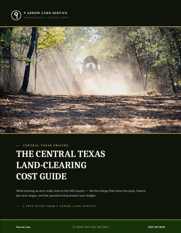

Forestry Mulching Cost Per Acre in Texas (2026)
The most common question we get is simple: what does forestry mulching cost per acre in Texas? The short answer for Central Texas is that most jobs land somewhere between $1,200 and $3,500 per acre — but the real driver isn't acreage, it's how much material is on the ground and how long it takes to grind.
What does forestry mulching cost per acre?
Mulching is priced by time, not by a flat sticker rate. A clean, lightly wooded acre of cedar saplings can run near the bottom of that range. A dense, mature stand of oak and Ashe juniper that takes a full day per acre runs toward the top — and very heavy thickets can run higher. We figure out how many hours an area will take, then quote it per acre, by the day, or as a lump sum so you know the number up front.
Rule of thumb: lighter ground clears faster and costs less per acre; the denser and bigger the trees, the more time per acre — and time is what you're paying for.
The 5 things that move your per-acre price
- Vegetation density. More stems and brush per acre means more grinding time.
- Tree size and species. Mature hardwoods take far longer than light regrowth.
- Terrain and slope. Steep, rocky, or wet ground slows production.
- Access. Tight gates or remote tracts add mobilization time.
- Total acreage. Bigger jobs usually drop the per-acre rate — mobilizing for half an acre costs about the same as for five.
Why mulching usually costs less than traditional clearing
Traditional clearing means cut, pile, haul, and burn — several machines and steps, plus disposal and permit costs. Forestry mulching grinds everything where it stands in a single pass and leaves the mulch behind as erosion control. No hauling, no burn piles, no separate cleanup bill. For most Central Texas properties that makes mulching both faster and cheaper. For the full breakdown, see our land clearing cost guide.
How acreage changes the rate
Small jobs carry the fixed cost of getting equipment to the site, so a half-acre clean-up has a higher effective per-acre rate than a 10-acre ranch reclamation. If you're clearing a large tract across the Texas Hill Country, ask about phasing the work — it often lowers the rate.
Frequently asked questions
How much does forestry mulching cost per acre in Texas?
In Central Texas, most forestry mulching runs about $1,200 to $3,500 per acre depending on density, tree size, terrain, and access. Light brush is cheapest; dense mature woods cost more because they take more time to grind.
Is forestry mulching cheaper than traditional land clearing?
Usually, yes. Mulching is a single pass with no hauling, burning, or disposal, so for most properties it costs less than cut-pile-haul-burn clearing — and it leaves mulch behind as erosion control.
Why is mulching priced by time instead of a flat acre rate?
Because two acres are rarely alike. The real cost is how many hours an area takes to grind, so pricing by time (then quoting per acre, per day, or lump sum) gives you an accurate number instead of a guess.

The Central Texas Land-Clearing Cost Guide
Real per-acre price ranges, the 5 things that move the cost, and the 7 questions to ask any contractor before you sign.
Get the free guide (PDF)Instant PDF · sent to your inboxIt does not get better.
Want a real number for your acreage?
Tell us about your land and we'll give you a clear per-acre price — before we start.
Request an Estimate